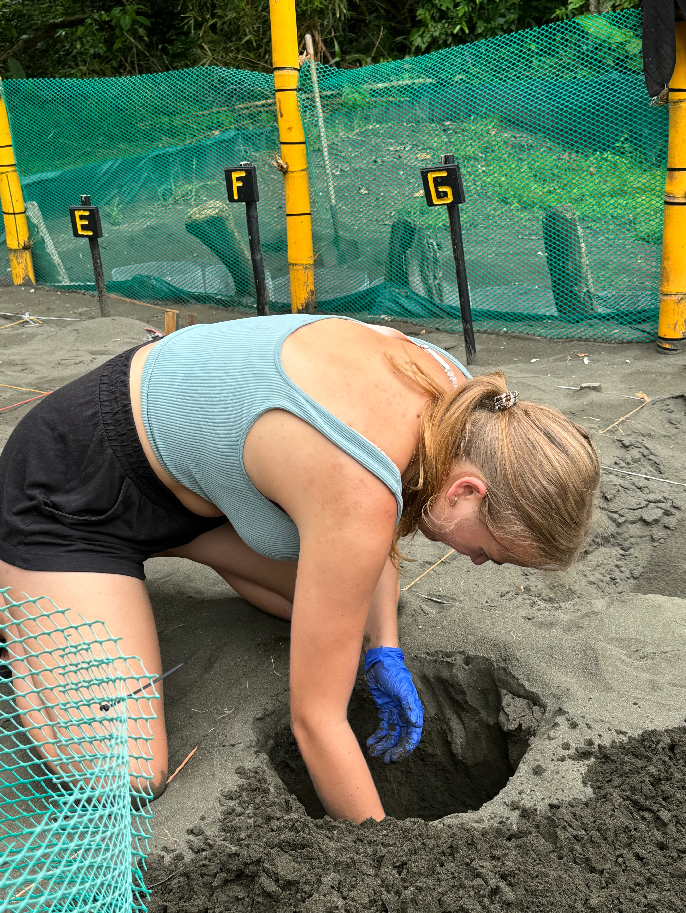

We protect the beaches that sea turtles choose to return to life.
Since 2006, we have worked alongside communities, institutions, volunteers, and strategic allies to protect these habitats, strengthen research, and promote actions that contribute to the conservation of these species. Each season represents an opportunity to generate knowledge, involve communities, and secure a future for sea turtles.
Why protect sea turtles?
Sea turtles play an essential role in the balance of marine and coastal ecosystems. However, they face multiple threats such as habitat loss, poaching, pollution, bycatch, and climate change. Our program seeks to reduce these risks through key actions:
We build the “turtle nursery”, a safe and protected space that follows SINAC recommendations and protocols, allowing us to relocate and protect exposed nests when they are at risk and conditions require it.
Our field teams and volunteers patrol beaches during nesting season to record turtle activity, protect nests, and detect threats. We collect data to assess the situation in each season.
We accompany the process from nest protection through hatchling emergence, creating opportunities for volunteers and communities to participate. Releases bring people closer to the conservation process and strengthen their commitment to protecting sea turtles.
Every protected nest is an opportunity to return to the ocean.
Your support makes our teams’ work possible during nesting season and contributes to protecting future generations of sea turtles.
Building life together
Each program is part of a larger conservation ecosystem. Discover how they work together to protect Corcovado.